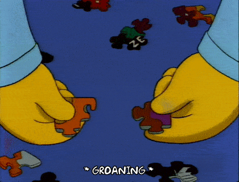

Digital Humanities = Big Humanities = Generative Humanities. Whereas the revolution of the post-WWII era has consisted in the proliferation of ever smaller and more rigorous areas of expertise and sub-expertise, and the consequent emergence of private languages and specialized jargons, the Digital Humanities is about integration and generative practices: the building of bigger pictures out of the tesserae of expert knowledge.  It is not about the emergence of a new general culture, Renaissance humanism/Humanities, or universal literacy. On the contrary, it promotes collaboration and creation across domains of expertise. The expert is here to stay BUT:
Digital Humanities = Co-creation. Because of the complexity of Big Humanities projects, teamwork, specialized roles within teams, and “production” standards that imply specialization become defining features of the digital turn in the human sciences. Large scale, distributed models of scholarship represent one of the transformative features of the Digital Humanities.
But there is ample room under the Digital Humanities for the reinvention of the solitary, “eccentric,” even hermetic work carried out by lone individuals both inside and outside the academy.
The ant colony...
...and the Ivory Tower,
the network and the monastery are both potential places of pleasure, knowledge, and reward within an economy founded on abundance. But we can no longer entrust knowledge creation and knowledge stewardship solely to the latter.
Modern scientific models of scholarship have prided themselves on the equation between rigor and the affect-neutral relaying of disembodied information. Yet this Enlightenment myth has long done battle with aestheticizing or styled forms of scholarly communication in ways that have become distinctive to the Humanities, and sometimes pitted them against prevailing practices in the social and natural sciences. Digital Humanities doesn’t preclude one or the other flavor of scholarship. It accommodates both. But by emphasizing design, multimediality, and the experiential, it seeks to expand the compass of the affective range to which scholarship can aspire. As such it gladly flirts with the scandal of entertainment as scholarship, scholarship as entertainment. It respectfully resists the notion that scholarship speaks outside of time, space, and the physicality of the human body. It is actively engaged in the task of creating an audience –even a mass audience—for humanistic learning.